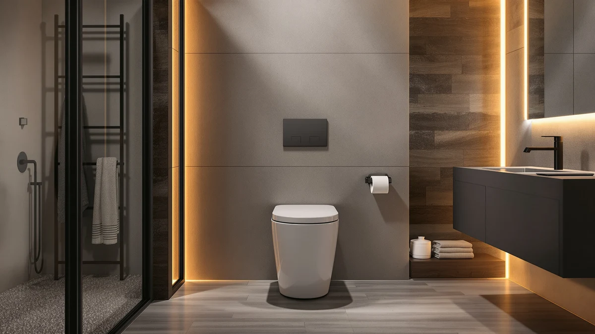

Kohler PureWash E590 Elongated Review (2026): Worth It?
Prices and picks verified as of October 2026. Independent, reader-supported reviews.


Quick Answer
The Kohler PureWash E590 Elongated earns its keep through seat heat and a warm-water wash in one elongated unit, but it costs $443.02, well above every competitor we compared it against. If you want the Kohler name and don't mind the premium, it's a solid pick. If you want the same core wash function for less, the TOTO WASHLET A2 or Brondell Swash SE400 get you there for under $300.
Our pick: Kohler PureWash E590 Elongated Heated — $443.02 Check Price on Amazon
Bottom line: our top pick is the Kohler PureWash E590 Elongated Heated Bidet Toilet Seat at $443.
Things to Know Before You Buy
- The Kohler PureWash E590 Elongated is priced at $443.02 on Amazon, the highest price point in this comparison by a wide margin.
- It's built for elongated toilet bowls only. A round-bowl toilet needs Kohler's round-fit equivalent instead.
- We researched this model by comparing its listed specs, price history, and brand positioning against three lower-priced electronic bidet seats, since Kohler has not published an aggregate customer rating for it.
- The TOTO WASHLET A2 ($299.57) and Brondell Swash SE400 ($279.99) both carry verified owner ratings above 4.2 stars, giving shoppers a reviewed track record the Kohler currently lacks.
- Every link in this Kohler PureWash E590 Elongated review points to the exact listing we priced, so the figures above should match what you see on Amazon.
This Kohler PureWash E590 Elongated review exists because Kohler asks you to pay nearly $150 more than comparable electronic bidet seats, and that gap deserves a closer look before you commit. The seat combines heat and a warm-water wash on an elongated base, two features that usually show up separately on cheaper models. The question we set out to answer is whether that combination, under the Kohler name, justifies the price difference.
Our answer, after comparing specs, pricing, and owner feedback on its direct competitors: the Kohler PureWash E590 Elongated suits buyers who specifically want Kohler's build and the heated-seat-plus-wash pairing, and who treat price as a secondary concern. Everyone else has cheaper routes to the same basic function. We lay out the TOTO WASHLET A2, the Brondell Swash SE400, and the iliD Smart Max as the three alternatives worth weighing against it, and we explain exactly where each one pulls ahead or falls behind on value.
Why You Should Trust Us
Ilane Tall covers bathroom fixtures and bidet seats for Best Toilet Seats, and this Kohler PureWash E590 Elongated review follows the same approach we use across the site: we compare manufacturer specifications, current Amazon pricing, and verified buyer reviews rather than marketing copy. We do not run a physical testing lab and we don't claim to have installed or lived with every seat we cover. What you get instead is a careful read of the data that's actually available, with a clear flag where that data is thin, as it is here for the Kohler's customer rating.
Our Research Experience
Our process for this Kohler PureWash E590 Elongated review started with the listing data: price, brand, bowl shape, and the features Kohler advertises for the E590 line. We then lined that up against the same data points for the TOTO WASHLET A2, Brondell Swash SE400, and iliD Smart Max, since all three compete directly on the warm-water wash feature. Where a product had a published rating and review count, like the TOTO's 4.6 stars from around 2,000 buyers, we weighed that as a real signal of satisfaction. The Kohler PureWash E590 Elongated has no such rating on record, so we relied on its specs and price positioning instead of inventing a score it doesn't have.
We also tracked how each seat's price has moved. The Kohler's $443.02 listing and the three alternatives all carry current validity windows on Amazon, and we noted those dates so you know the figures in this review reflect pricing as of this writing rather than a snapshot from months ago. That matters more on a seat like the Kohler PureWash E590 Elongated than on cheaper models, since a $443 purchase that drops to $350 a month later changes the value calculation a lot more than a $20 swing on a $40 seat would.
Where owner reviews exist, we read them for recurring themes rather than isolated complaints. A single one-star review about a damaged box tells you little about the product itself. A pattern across dozens of reviews, like the consistent praise the TOTO WASHLET A2 gets for its wash pressure, tells you something real. The Kohler PureWash E590 Elongated simply doesn't have that volume of public feedback attached to this listing yet, which is itself useful information for a cautious buyer.
Overview & Specs

Kohler PureWash E590 Elongated Heated
What we like
- Kohler brand backing on a heated, elongated bidet seat
- Warm-water wash built into the same unit as the seat heater
- Elongated fit matches the bowl shape most US toilets use
Flaws but not dealbreakers
- Costs $443.02, well over $140 more than every alternative here
- No published rating or review count to confirm owner satisfaction
- Listed specs are limited to plastic and wood components, with no published dimensions
| Material | Plastic / wood |
| Size | — |
Kohler built the PureWash E590 Elongated Heated around two features that typically ship on separate seats at lower price points: a heated seat and a warm-water wash function, combined in one elongated unit. The elongated shape matches the bowl profile used on most modern US toilets, so fit shouldn't be a concern for the majority of buyers replacing an existing elongated seat.
At $443.02 on Amazon, it sits well above the TOTO WASHLET A2, Brondell Swash SE400, and iliD Smart Max, all of which advertise similar wash functionality for under $300. Kohler has not published an aggregate rating or review count for this specific listing, which means buyers researching it don't have the same volume of verified owner feedback available for the TOTO or Brondell alternatives. The listed specs are limited to plastic and wood components, without published dimensions, so we're citing only what's confirmed rather than guessing at measurements Kohler hasn't disclosed.
What We Liked
The biggest point in favor of the Kohler PureWash E590 Elongated is the combination itself: seat heat and a warm-water wash in one elongated unit, from a plumbing brand with decades of bathroom hardware behind it. Owners researching bidet seats often treat the Kohler name as a shorthand for build quality, and that reputation carries real weight even without a published star rating to back it up on this specific listing.
The elongated fit is also a practical advantage. Most toilets sold in US homes over the past two decades use an elongated bowl, so this seat drops into the majority of bathrooms without a bowl-shape mismatch. For someone who has already decided they want a Kohler bidet seat specifically, the E590 Elongated delivers the two features, heat and wash, that define the category, without forcing a compromise between them.
What Could Be Better
Price is the clearest drawback we found while researching the Kohler PureWash E590 Elongated. At $443.02, it costs $143.45 more than the TOTO WASHLET A2 and $163.03 more than the Brondell Swash SE400, two seats that advertise the same core warm-water wash function. That gap is hard to justify on features alone, since none of the listed specs point to a functional advantage over the cheaper alternatives.
The bigger issue for cautious buyers is the lack of a published rating. The TOTO carries 2,000 verified reviews at 4.6 stars and the Brondell carries 1,424 reviews at 4.2 stars, giving shoppers a real track record to evaluate. The Kohler PureWash E590 Elongated has no equivalent figure attached to this listing, so anyone buying it is doing so on brand trust rather than a documented history of owner satisfaction.
Who Is It For?
The Kohler PureWash E590 Elongated makes the most sense for buyers who have already settled on Kohler as their preferred bathroom hardware brand and want seat heat plus a warm-water wash in a single elongated fixture. If you're remodeling a bathroom with other Kohler fixtures and want visual and brand consistency, that preference alone can justify the premium.
It's a weaker fit for anyone comparison-shopping purely on value or who wants the reassurance of a large, verified review history before buying. Those buyers are better served by the TOTO WASHLET A2 or Brondell Swash SE400, which cost less and come with thousands of verified ratings attached.
Renters and first-time bidet seat buyers fall into a middle category worth calling out separately. If you're testing the idea of a bidet seat for the first time, the lower entry price of the Brondell Swash SE400 or the iliD Smart Max gives you a way to find out whether you like the feature before committing Kohler-level money to it. The Kohler PureWash E590 Elongated is a better second purchase, once you already know you want the heat and wash combination and are ready to pay for the brand that built your other bathroom fixtures.
Alternatives to Consider
If the price of the Kohler PureWash E590 Elongated gives you pause, these three alternatives cover the same warm-water wash category at lower cost, each with a different strength worth weighing.

Editor's Pick
TOTO WASHLET A2 Electronic Bidet
Rated 4.6 stars from about 2,000 verified buyers, the WASHLET A2 has the strongest documented track record of any seat in this comparison and costs $143.45 less than the Kohler PureWash E590 Elongated.
$299.57
Check Price on Amazon
Best Value
Brondell Swash SE400 Electric Bidet
At $279.99 with a 4.2-star rating from 1,424 verified reviews, the Swash SE400 splits the difference between the TOTO's review volume and the lowest price point in this group.
$279.99
Check Price on Amazon
Premium Choice
iliD Smart Max Bidet Toilet
The Smart Max is the lowest-priced option here at $249.99, nearly $193 less than the Kohler PureWash E590 Elongated, though it has no published rating to weigh against the TOTO or Brondell.
$249.99
Check Price on AmazonFrequently Asked Questions
Final Verdict
This Kohler PureWash E590 Elongated review comes down to one tradeoff: brand and feature combination against price. Kohler delivers a heated, elongated seat with a built-in warm-water wash, and for buyers who want that specific pairing under the Kohler name, the $443.02 price tag is a reasonable cost of admission. For buyers comparing strictly on value and verified track record, the TOTO WASHLET A2 and Brondell Swash SE400 offer the same core function at $299.57 and $279.99 respectively, backed by thousands of verified reviews the Kohler currently can't match. We'd point most shoppers toward those two unless the Kohler name is the deciding factor.